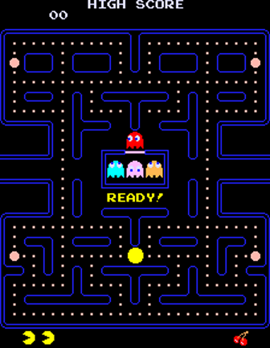
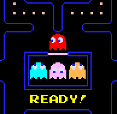

第２章：ゲームプレイの詳細
パックマンはもともと女性プレイヤーにアピールするために考案されたものなので、とても簡単で親しみやすいゲームです。それがパックマンを息の長いゲームにした要因だと思います。
クリエーター: 岩谷徹
基礎
Pac-Manの基本前提は非常にシンプルです： プレイヤーは４方向レバーを使用してパックマンを上下左右へ導き、ドットで満たされた迷路の通路を走り抜けてそれらを食べつくすだけです。また、４種類のゴースト･モンスターも迷路にいて、私たちのヒーローを追いかけ襲おうとしています。
目的は追いかけるゴーストを避けながら迷路上のドットをすべて回収することです。各ラウンドが始まると、迷路の中央にある“巣”からゴーストたちが動き出して追跡を始めます。
パックマンがゴーストにつかまるとライフがひとつ減り、ゴーストは巣に戻され、新しいパックマンが開始地点に置かれてからプレイが再開されます。迷路からドットを食べつくすと盤面がリセットされ、新しいラウンドが始ります。ライフがないときにパックマンがゴーストにつかまれば、ゲームオーバーとなります。
迷路には244個のドット（訳注：リリース当時はエサ、近年はクッキーと呼ぶ）があり、パックマンがこれらを食べつくすと次のラウンドに進むことができます。240個の小さなドットは各10ポイント、４つの大きな点滅するドット（パワークッキー）は各50ポイントを獲得できます。
これにより各ラウンドでドットを食べつくすと合計2,600ポイントが得られますが、それ以外にもスコアを伸ばす２つの方法があります：
そのひとつめは、形勢を逆転してゴーストに反撃する方法です。パックマンが四隅にあるパワークッキーのうち１つを食べると、ゴーストは進行方向を反転し、通常に戻るまでしばらく濃い青色のイジケに変わります。
イジケのあいだパックマンに対して弱々しくなり、時間切れになるまえに噛みつくと追加ポイントを獲得できます。噛みつかれたゴーストは目玉で巣へ戻り、そこで復活すると再びパックマンを追いかけ始めます。
パワークッキーを食べてゴーストに噛みついた初回は常に200ポイントを獲得し、同一のパワークッキーで他のゴーストに噛みつくとポイントが倍増して、それぞれ400、800、1,600ポイントを獲得できます。４つのパワークッキーを使って４体のゴーストすべてに噛みつくと、12,000ポイントを追加することが可能です。最初の数ラウンドは数秒間イジケが続くのでこれを達成するのはそれほど困難ではありません。
ただし、その後すぐにゴーストの“イジケタイム”は１〜２秒に短縮されるため、これらの盤面では時間切れになる前に４体すべてに噛みつくことは格段に困難になってきます。レベル19以降のゴーストはまったくイジケることがなくなるので、追加ポイントを得るために噛みつけなくなります。
ふたつめのスコアを伸ばす方法は、ゴーストの巣の真下に現れるボーナスシンボル（一般にフルーツと呼ばれる）をラウンドごとに２回食べて、追加ポイントを獲得することです。
１回目のフルーツはドットを70個食べたとき、２回目は170個食べたときに現れます。
フルーツはプレイヤーのいる現在のレベルに応じて、100から5,000ポイントまでの価値があります。フルーツが現れてから消えるまでの時間は常に９から10秒のあいだで、厳密には（9.3333秒、10.0秒、9.75秒など）可変であり予測可能なパターンにはなっていません。つまり同じレベルで同じパターンを二度実行しても、画面上にフルーツが表示されている時間の長さは保証されません。
通常この事実には気づきません。ほとんどのパターンはフルーツが現れてから可能なかぎり早く食べるように設計されているからです。既にクリアした直近の６ラウンドと現在のラウンドで使用されたフルーツは、画面の下端に沿って並べられます（しばしばフルーツカウンター、あるいはレベルカウンターと呼ばれます）。レベルごとのフルーツと獲得できるスコアについては付録の表A.1を参照してください。
お決まりの手口
ゴーストにはプレイ中に発生しうる相互に排他的な３つの行動モードがあり、
追跡･縄張･イジケの各モードで遂行すべき目的と対象が異なります：
-
追跡——追跡モードでのゴーストの目的は、迷路上のパックマンを追いつめることです。各ゴーストはパックマンを追いかける際に独特の行動をしめし、彼らに異なる個性を与えます：
- アカベエ（赤色）……非常に攻撃的で背後に迫ると振りきりづらい
- ピンキー（桃色）……プレイヤーの前に出て遮る傾向がある
- アオスケ（水色）……最も予測しにくい
- グズタ（橙色）……気ままに動くのであまり邪魔にならない
-
縄張——縄張モードでは、ゴーストは数秒間だけ追跡をやめ、それぞれの縄張へと向かいます。それは喜ばしいことですが短い休息です。彼らはすぐに追跡モードに戻り、追跡を再開します。
-
イジケ——パックマンが迷路の四隅にある４つの各パワークッキーを食べると、ゴーストたちはイジケモードに入ります。初期レベルではゴーストはみな濃い青色（弱体化を意味する）に変わり、数秒間あてもなく迷路をさまよって、もとの行動モードに戻る少し前に点滅を始めます。
運命の逆転
 ３つの行動モードで共通してゴーストは、進行方向の反転を禁じられています。そのため道なりに直進するか、次の交差点で左か右に曲がることしかできません。したがって、ゴーストが迷路の交差点で進む方向を選択すると、次の交差点まで道なりに進むしかありません。
３つの行動モードで共通してゴーストは、進行方向の反転を禁じられています。そのため道なりに直進するか、次の交差点で左か右に曲がることしかできません。したがって、ゴーストが迷路の交差点で進む方向を選択すると、次の交差点まで道なりに進むしかありません。
もちろんPac-Manを遊んだことがあれば、ゴーストたちが一定の期間で方向を反転するのはご存知でしょう。しかし彼らの意思で反転できないのなら、なぜでしょうか？ 答えは次のとおりです： モードが変更されるとシステムはゴーストの通常行動を無効にし、進路を反対方向へ強制することができます。これが生じるときは常にあるモードから別のモードへの切り替わりであり、彼らの行動が視覚的な指標となります。
ゴーストたちは、追跡から縄張モード、追跡からイジケモード、縄張から追跡モード、縄張からイジケモードに切り替わるたびにシステムによって進行方向を反転するように強制されます。
イジケモードから追跡または縄張モードに戻るさいには進行方向を反転しません。
システムがゴーストの進路を反転するように強制するばあい、ゴーストたちは必ずしも同時に方向を変えるとは限りません。向きを変える前にほんの一瞬前進し続けることがあります。
システムが反転を通知してからゴーストが実際に応答するまでの遅延は、反転信号が送信されたのち、ゴーストが現在の進路に沿って次のタイルに入るのにかかる時間によって異なります（タイルの詳細は第３章を参照）。ゴーストが新しいタイルに入ると反転信号に従って向きを変えます。
縄張り、追いかけ、その繰り返し…
ゲームプレイ中に所定の間隔でゴーストの縄張/追跡モードが交互に切り替わります。これらのモードが替わるときにはゴーストたちが進行方向を反転するため、いつ行われたのかは容易に判断できます。
ゴーストが無限に追跡モードにとどまる前に、縄張モードはレベルごとに４回行われます。
優れたプレイヤーはゴーストがパックマンを追っていない僅かな時間を利用し、迷路のより危険なエリアからドットを回収して縄張期間を最大限に活用します。ライフを失うか、またはレベルを完了すると縄張/追跡タイマーはリセットされ、４回ある縄張モードのうちその初回モードで巣からゴーストが出発します。
レベル１～４まで初回と２回目の縄張期間はそれぞれ７秒続きます。レベル５以降ではそれぞれ５秒に変更されます。３回目は常に５秒に設定されます。４回目はレベル１では５秒続きますが、これより後は僅か1/60秒となります。これはゴーストの単純な進行方向の反転にみえます。
初回と２回目の追跡期間はそれぞれ20秒続きます。３回目はレベル１では20秒ですが、レベル２～４では1,033秒、これより後では1,037秒に膨れあがって17分以上も続きます！
ゴーストたちがイジケモードに入ると縄張/追跡タイマーが一時的に停止され、イジケモードが時間切れになるとイジケる前のモードに戻って縄張/追跡タイマーが途中から再開されます。
これまでの情報は次の表に要約されています（単位は秒）：
| モード | Lv.1 | Lv.2-4 | Lv.5+ | |
|---|---|---|---|---|
| 1 | 縄張 | 7 | 7 | 5 |
| 追跡 | 20 | 20 | 20 | |
| 2 | 縄張 | 7 | 7 | 5 |
| 追跡 | 20 | 20 | 20 | |
| 3 | 縄張 | 5 | 5 | 5 |
| 追跡 | 20 | 1033 | 1037 | |
| 4 | 縄張 | 5 | 1/60 | 1/60 |
| 追跡 | 無限 | 無限 | 無限 |
イジケのふるまい
パックマンが迷路の四隅にある４つの各パワークッキーを食べると、ゴーストは方向を反転し、初期レベルでは短時間だけイジケモードになります。イジケゴーストはみな濃い青色に変わり、通常よりゆっくりとした速度であてもなく迷路をさまよって、通常に戻るまえに警告として短時間点滅します。
イジケゴーストは疑似乱数ジェネレータ（PRNG）を使用して、交差点で曲がる方向を決めます。
PRNGは最後の数ビットを読み取るための疑似乱数メモリアドレスを生成します。これらのビットはイジケゴーストが最初に試みなければならない方向に変換されます。選択された方向が壁ではなく、ゴーストが進んできた方向の反対でもなければ、その方向が受け入れられます。さもなくば、コードは時計回りの順に再試行し、進める方向がみつかるまでこのテストを繰り返します。PRNGは新しいレベル、ライフが失われるたびに同一のシード値でリセットされるため、プレイ中にパターンを実行するとイジケゴーストは常に同じ道を選ぶことになります。
レベルが進むにつれてゴーストがイジケモードで過ごす時間は短くなり、最終的にはまったくイジケなくなります（ただし進行方向は反転する）。レベルごとのイジケタイム（秒数）と点滅回数は付録の表A.1を参照してくさい。
速さ
ゲームはパックマンの最高速度の80％で始まります。レベル５から20までパックマンは全速力で動き、レベル21以降は90％まで減速します。パックマンが通常のドットを食べるたびに１フレーム（1/60秒）動きを止め、１割ほど進むのが遅くなります——これは後続のゴーストに追いつかれるのに十分なほどです。
パワークッキーを食べるとパックマンは３フレーム動きを止めます。
ゴーストが維持する通常の速度はパックマンよりも少し遅く、レベル21になるとゴーストはパックマンよりも速く動き始めます。しかし、全レベルを通してワープトンネルに入るとその速度は半分ちかくまで遅くなります。
イジケゴーストは通常よりもはるかに遅い速度で移動し、レベル１～４のばあいパックマンは逆に速度を上げます。次の表はパックマンとゴーストの速度を要約したものです。この情報は付録の表A.1にも含まれています。
| パックマンの速さ | ゴーストの速さ | ||||||
|---|---|---|---|---|---|---|---|
| レベル | 通常時 | 通常時 ドット |
イジケ モード |
イジケ ドット |
通常時 | イジケ | トンネル |
| 1 | 80% | ~71% | 90% | ~79% | 75% | 50% | 40% |
| 2-4 | 90% | ~79% | 95% | ~83% | 85% | 55% | 45% |
| 5-20 | 100% | ~87% | 100% | ~87% | 95% | 60% | 50% |
| 21+ | 90% | ~79% | - | - | 95% | - | 50% |
コーナリング
パックマンは敵よりも速く曲がり角を進むことが可能です。ゴーストのように曲がり角の中心まで待って方向を変える必要はありません（下図を参照）。代わりにパックマンは、曲がり角の中心に到達する数ピクセル手前でターンし始めたり、中心を通過したあと数ピクセル後方でターンすることもあります。
中心に到達する１ピクセル以上手前のターンをプリターンと呼び、１ピクセル以上後方のターンをポストターンと呼びます。プレイヤーが習得することはレバーの安定した操作であり、曲がり角の中心に達する前にパックマンの進む方向に倒して、より中心から離れた数ピクセル手前でプリターンを開始させます。
このテクニックはコーナリングと呼ばれ、新規にPac-Manを遊び始めたプレイヤーが習得すべき初歩的なスキルのひとつです。プリターンの操作が成功するたびに、パックマンは後続するゴーストを少し引き離せます。
始めのうちは僅かな距離の差にあまり意義を見出せないかもしれませんが、素早いコーナリングを連続すると最も果敢な追跡者さえ振りきれるのです。これはより後のレベルで生き抜くための重要な手段です。
パックマンがプリターンまたはポストターンを行うたびに彼の向きが変わり、それまでの移動方向の各ピクセルに加えて新しい方向へ１ピクセル移動し始め、45度の角度で移動すると速度が実質的に２倍になります。新しい方向の通路で中心線に達すると純粋にその方向へ動き始め、速度は通常に戻ります。
最も手前のプリターンが可能なら最大距離のアドバンテージが得られます。次の図はターンに入れる各４方向についてプリターンのピクセル（緑）、中心点のピクセル（黄）、およびポストターンのピクセル（赤）のレイアウトを示しています。各例は、パックマンが異なる方向から同じ十字路に入るところを示しています。
左から入ると曲がり角の中心より手前に３ピクセルぶんのプリターン、後方に４ピクセルぶんのポストターンがあります。逆に右から同じ交差点に入ると手前に４ピクセルぶんのプリターン、後方に３ピクセルぶんのポストターンがあります。これらの性質は下から入るとき、逆に上から入るときも同様です。
最も早いプリターンよりも遅いターンのばあい、パックマンは遅れたピクセルごとに１フレーム“遅れ”ます。速度を最大化する基本として、曲がり角に到達する前にレバーをしっかり倒しておきましょう。
（リンク先は図のフルサイズ）
大半のパターンを正常に実行するには、可能なかぎり早いプリターンを成功させることも必要条件です。パターンはパックマンがいつ曲がるかについての人間的な不確実性を取り除くため、完璧なコーナリングでプレイすることを意図しています。コーナリングができていなければ、パターンの考案者が作成したあらゆるターンの正確なタイミングを再現することはまず不可能であり、まったくの同じタイミング、同じタイル上にパックマンがいなければ予期せぬゴーストの挙動をまねく可能性が高まります。
通常、最も一般的なパターンは小さな入力タイミングのミスが発生しても“成しうる”傾向があります（たとえば右から曲がり角に近づくとき、４ピクセルではなく３ピクセル中心から離れたとか）。ほかの、特にパックマンをシーケンス後半でゴーストに非常に近づけるものは、完璧なターンでなければ“崩れる”傾向があります。
Pac-Manを長く遊んでいれば、どんなに腕のよいプレイヤーでも一連の高速ターンでときおりタイミングを誤り、起こりうる結果に対処せねばなりません。そのため、常に完璧なコーナリングを目指すべきですが、微妙な入力タイミングのズレがパターンに入り込むことによる、予期せぬゴーストの挙動には注意が必要です。
ホームスイートホーム
一般にゴーストハウスや巣と呼ばれる迷路の中心にある囲まれたエリアは、４体いるゴーストの領分であり、パックマンは立ち入りが禁止されています。
レベルを完了するか、またはライフが失われるたびにゴーストはプレイが続行される前に巣の中またはその周辺の開始位置に戻されます——アカベエは常に真上の外側に、ほかの３体は巣の内側に配置されます： 左側がアオスケ、中央がピンキー、右側がグズタ。
上部のピンクドアはゴーストの出入りに使用されます。しかし、ゴーストは一度外に出るとパックマンに噛みつかれないかぎり、再び入ることはできません。噛みつかれると肉体のない目玉は巣に戻って復活します。アカベエはレベルを完了したのち、またはライフが失われたあとすでに外にいるので、巣に入れるのはパックマンに噛みつかれた後だけであり、復活すると直ちに向きを変えて巣から出て行きます。
巣に関するアカベエの行動について知っておくべきことは以上ですが、他の３体がいつ巣をでるのか決定するためには幾つかの変数と条件に基づいた複雑なプロセスを踏みます。本節の残り部分ではそれらのみに言及するので、以下で述べる“ゴースト”はピンキー、アオスケ、グズタを指し、アカベエは除外されます。
いつ出発するのか評価するひとつめの制限は、パックマンが食べたドットの数を追跡するために、各ゴーストが個別に保持する“ドットカウンター”です。これはレベルの開始時にゼロにリセットされ、巣の中でのみ有効になりますが、巣に何体いようとも有効になるのは常に１体のカウンターだけです。
ドットカウンターを有効にする優先順はピンキー、アオスケ、グズタの順であり、パックマンがドットを食べるたびに巣の中にいる優先されたゴーストのドットカウンターが１つ増えます。また、各ゴーストにはレベルごとにカウンターに関連づけられた“ドット制限”も割り当てられています。
優先されたゴーストがドット制限に達するか超えると直ちに巣から出発して、ドットカウンターが解除されます（リセットはされません）。この時点で巣の中で待機している次に優先度の高いゴーストがもしいれば、そのゴーストの保持するドットカウンターが有効となってカウントを開始します。
ピンキーのドット制限は常にゼロに設定されており、どのレベルでも直ちに巣から出発します。レベル１ではアオスケの制限は30であり、グズタは60に設定されています。その結果、ピンキーは即座に出発し、アオスケのドットカウンターが有効となります。そして開放されるには少なくとも30に達する必要があります。
アオスケが離れ始めるとグズタのドットカウンター（この時点ではまだゼロのまま）が有効となり、彼のカウントが60以上になると巣から開放されます。レベル２では、アオスケのドット制限は30から０になり、グズタは60から50に変更されます。これ以降、アオスケは開始と同時に巣から出発します。
レベル３からはドット制限は３体ともゼロとなり、以降はみなレベル開始と同時に出発します。
ライフが失われるたびにシステムはゴースト個別のドットカウンターを解除し（ただしリセットはされない）、代わりにグローバル･ドットカウンターを有効にします。これはライフが失われるたびにゼロにリセットされ、その時点から食べたドットがカウントされます。
巣にいる３体は、この特別なカウンターが出発のタイミングを告げるまで待機せねばなりません。ピンキーは７に等しいとき、アオスケは17に等しいときに解放されます。カウンターを解除する唯一の方法は、32に等しいときグズタが巣にいることです。さもなくば巣が空っぽになってもドットを数え続けます。
グズタがしかるべきとき巣にいれば、グローバル･ドットカウンターは解除されてゼロにリセットされます。そしてこの時点でまだ巣にいるグズタも含む、すべてのゴーストについて個別に保持するドット制限が再び有効となり、巣から出るタイミングを決定するために以前と同じように使用されます。
ドットカウンターだけの制限だった場合、パックマンが早い段階で食べるのをやめるとゴーストは永久に巣の中で閉じ込められます。この問題を解決するため、パックマンが最後にドットを食べてからの経過時間を計るタイマーが別途実装されました。これは常に動いていますが、食べるたびにゼロにリセットされます。
タイマー制限に達する長いあいだパックマンが食べないでいると、巣にいる待機中の最も優先度の高いゴーストが強制的に追い出され、タイマーはゼロにリセットされます。この制限においても上述の優先順が使用されます。ゲーム初期のタイマー制限は４秒ですが、レベル５以降では３秒に短縮されます。
勘の良い読者ならもうお気づきでしょうが、このシステムには微妙な欠陥があり、ピンキー･アオスケ･グズタに噛みついたあと非常に長いあいだ巣に留めておく方法があります。これを仕掛けるには、グローバル･ドットカウンターをリセットして有効にするためにライフを犠牲にし、32個を数える前にグズタが巣を出るようにします。
これはドットを食べることを避け、タイマー制限でグズタが強制的に追い出されるのを待つことで達成されます。グズタが出口に向かって移動したら、少なくとも32個を消費するまで再び食べ始めます。次にパワークッキーへ向かいゴーストに噛みつきます。アカベエはいつも通りすぐに巣を出ますが、パックマンがタイマー制限を発動しないように十分な頻度でドットを食べ続けるかぎり、他の３体は巣のなかで“足止め”されます。
なぜこれが起こるのでしょうか？ 秘訣はグローバル･ドットカウンターの仕組にあり、この値が32のときグズタが巣の外にいると解除されないのです。32個のドットを食べる前にタイマー制限でグズタを追い出すと、32に達してもグローバル･ドットカウンターは解除されることなくドットを数え続けます。これによりゴーストはパックマンに噛みつかれて巣に戻るとグローバル･ドットカウンターを使用していつ出発するのか判断します。
しかし、前述のようにこのカウンターのロジックは７、17および32の３つの値のみをチェックし、これらの数値を超えるとカウンターに関連づけられたゴーストを解放する手だてがありません。ゴーストを解放するために残された唯一の制限はタイマーです。これはドットを頻繁に食べてリセットすることで簡単に回避できます。この奇妙な行動のデモンストレーションを見るには、以下のYouTubeビデオを参照してください：
巣について最後に言及することは、ゴーストが巣を出て左右のどちらへ移動するのか決定する方法です。ゴーストは外に出ると通常左へ進みます。ただし、あるゴーストが巣にいるときにシステムがモードを１回以上変更すると、そのゴーストは巣を出て右へ進みます（訳注：厳密に言うと反転信号が保留されたままになり、巣を出るとほんの一瞬左へ進み出しますが、タイルに入ってすぐ進路を反転します。その結果、右へ進むのです）。
補足： 訳者による本節のまとめ
| ピンキー | アオスケ | グズタ | |
|---|---|---|---|
| Lv.1 | 0 | 30+ | 60+ |
| Lv.2 | 0 | 0 | 50+ |
| Lv.3+ | 0 | 0 | 0 |
- ドットカウンターはレベル開始時にゼロにリセットされる
- 有効になるのは巣にいる最も優先度の高い１体だけ
- 開放する優先順はピンキー → アオスケ → グズタ
- パックマンがドットを食べるたびにカウントが１つ増える
- 制限の数以上カウントすると当該ゴーストが開放される
- 開放されてもドットカウンターはリセットされない
| Lv.1-4 | Lv.5+ |
|---|---|
| 4秒 | 3秒 |
| ピンキー | アオスケ | グズタ |
|---|---|---|
| 7 | 17 | 32 |
- タイマーはパックマンが最後にドットを食べてからの経過時間
- レベルごとの制限時間に達すると上述の優先度で開放される
- 開放時またはドットを食べるたびにタイマーはゼロにリセット
- ライフを失ったあとはグローバル･ドットカウンターを使用
- 個別のカウンターは解除される（リセットはされない）
- プレイ再開時からパックマンが食べたドットをカウントする
- それぞれのゴーストは７、17、32と等しいとき開放される
- 解除される条件は32と等しいときグズタが巣にいること
- もしそうなら、個別のドットカウンターが再び有効となる
- さもなくば、噛みつかれた各ゴーストは巣で足止めされる
最大限活用すべきエリア
上の図は迷路内でゴーストの行動が制限される４つの特別な“ゾーン”を示しており、これらを利用してプレイヤーはゲームを有利に進められます。２つの赤いゾーンはゴーストが上向きに曲がれない領域を示しており、入りこんだゴーストはこの一帯を抜けるまで左右方向にしか進めません。
したがってパックマンだけがこれらの通路で上向きにアクセスできます。反対側からはゴーストも通過できることを覚えておきましょう！ レッドゾーンの制限は縄張モードおよび追跡モードの両方で適用されますが、イジケモードでは一時的に無視され、ゴーストが選択した場合に上へ進みます。
ピンクゾーンは両端でつながっている、２つに分割されたトンネルを示しています。前述のようにゴーストはトンネルに入ると即座に速度ペナルティを受け、これらのゾーンを抜けるまで速度が遅くなります。この減速ルールは常にゴーストのみに適用され、パックマンに適用されることはありません。